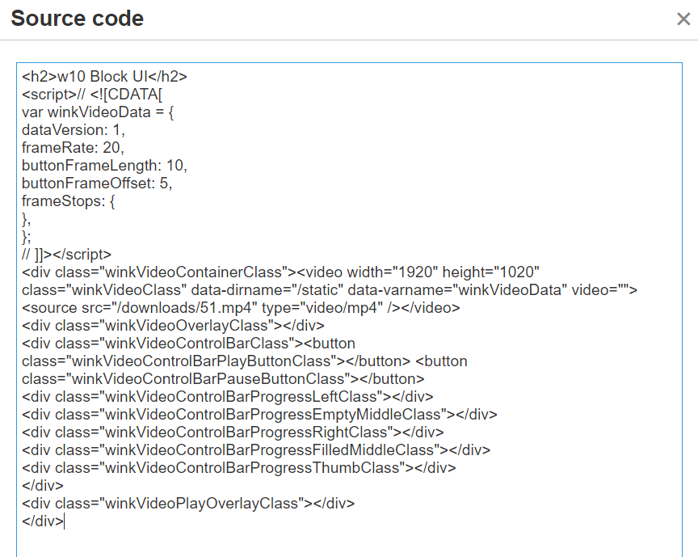

w9 <<
Previous Next >> w 11
w 10
請各組員在下列影片中加入註解說明後, 分別以 w10_block_ui、w10_nx_integ 與 w10_ssh 作為標題, 將說明影片嵌入個人 cd2022 網站頁面 (設為 H2 或 H3) 及 blog 網誌中.
w10-1 任務執行步驟:
1 下載 w10_block_ui.wnk
2 利用 Wink 開啟專案
3 在各頁面加入說明標註
4 若有其他附加頁面, 則需縮至 1008x630 後插入適當位置
5 完成後轉出對應的 mp4 放入頁面與網誌
<h2>w10 Block UI</h2>
<script>// <![CDATA[
var winkVideoData = {
dataVersion: 1,
frameRate: 20,
buttonFrameLength: 10,
buttonFrameOffset: 5,
frameStops: {
},
};
// ]]></script>
<div class="winkVideoContainerClass"><video width="1920" height="1020" class="winkVideoClass" data-dirname="./../cmsimde/static" data-varname="winkVideoData" video="">
<source src="./../downloads/影片名稱.mp4" type="video/mp4" /></video>
<div class="winkVideoOverlayClass"></div>
<div class="winkVideoControlBarClass"><button class="winkVideoControlBarPlayButtonClass"></button> <button class="winkVideoControlBarPauseButtonClass"></button>
<div class="winkVideoControlBarProgressLeftClass"></div>
<div class="winkVideoControlBarProgressEmptyMiddleClass"></div>
<div class="winkVideoControlBarProgressRightClass"></div>
<div class="winkVideoControlBarProgressFilledMiddleClass"></div>
<div class="winkVideoControlBarProgressThumbClass"></div>
</div>
<div class="winkVideoPlayOverlayClass"></div>
</div>
1.刪除「./../cmsimde」 ex:dirname="/static"
2.改成自己wink影片的尺寸「height="712" width="1138"」 ex: height="1920" width="1020"
3.改成自己影片的路徑及名稱「wink/meArm_robot_wink」 ex: <source src="./../downloads/test.mp4"
改好後會像圖片這樣，紅色框的內容可避免wink影片重疊，分別加在wink影片原始碼前後

w9 <<
Previous Next >> w 11